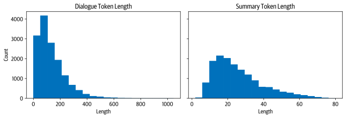

# Uncomment and run this cell if you're on Colab or Kaggle
# !git clone https://github.com/nlp-with-transformers/notebooks.git
# %cd notebooks
# from install import *
# install_requirements(is_chapter6=True)
#hide
from utils import *
setup_chapter()
Using transformers v4.12.0.dev0
Using datasets v1.12.1
Using accelerate v0.5.1
# hide
from transformers import pipeline, set_seed
2021-10-26 08:42:19.435660: W tensorflow/stream_executor/platform/default/dso_loader.cc:64] Could not load dynamic library 'libcudart.so.11.0'; dlerror: libcudart.so.11.0: cannot open shared object file: No such file or directory
2021-10-26 08:42:19.435693: I tensorflow/stream_executor/cuda/cudart_stub.cc:29] Ignore above cudart dlerror if you do not have a GPU set up on your machine.
Summarization#
The CNN/DailyMail Dataset#
#hide_output
from datasets import load_dataset
dataset = load_dataset("cnn_dailymail", version="3.0.0")
print(f"Features: {dataset['train'].column_names}")
Split lengths: [275349, 12148, 10397]
Features: ['article', 'highlights', 'id']
sample = dataset["train"][1]
print(f"""
Article (excerpt of 500 characters, total length: {len(sample["article"])}):
""")
print(sample["article"][:500])
print(f'\nSummary (length: {len(sample["highlights"])}):')
print(sample["highlights"])
Article (excerpt of 500 characters, total length: 3192):
(CNN) -- Usain Bolt rounded off the world championships Sunday by claiming his
third gold in Moscow as he anchored Jamaica to victory in the men's 4x100m
relay. The fastest man in the world charged clear of United States rival Justin
Gatlin as the Jamaican quartet of Nesta Carter, Kemar Bailey-Cole, Nickel
Ashmeade and Bolt won in 37.36 seconds. The U.S finished second in 37.56 seconds
with Canada taking the bronze after Britain were disqualified for a faulty
handover. The 26-year-old Bolt has n
Summary (length: 180):
Usain Bolt wins third gold of world championship .
Anchors Jamaica to 4x100m relay victory .
Eighth gold at the championships for Bolt .
Jamaica double up in women's 4x100m relay .
Text Summarization Pipelines#
sample_text = dataset["train"][1]["article"][:2000]
# We'll collect the generated summaries of each model in a dictionary
summaries = {}
#hide_output
import nltk
from nltk.tokenize import sent_tokenize
nltk.download("punkt")
[nltk_data] Downloading package punkt to /home/leandro/nltk_data...
[nltk_data] Package punkt is already up-to-date!
True
string = "The U.S. are a country. The U.N. is an organization."
sent_tokenize(string)
['The U.S. are a country.', 'The U.N. is an organization.']
Summarization Baseline#
def three_sentence_summary(text):
return "\n".join(sent_tokenize(text)[:3])
summaries["baseline"] = three_sentence_summary(sample_text)
GPT-2#
#hide_output
from transformers import pipeline, set_seed
set_seed(42)
pipe = pipeline("text-generation", model="gpt2-xl")
gpt2_query = sample_text + "\nTL;DR:\n"
pipe_out = pipe(gpt2_query, max_length=512, clean_up_tokenization_spaces=True)
summaries["gpt2"] = "\n".join(
sent_tokenize(pipe_out[0]["generated_text"][len(gpt2_query) :]))
T5#

#hide_output
pipe = pipeline("summarization", model="t5-large")
pipe_out = pipe(sample_text)
summaries["t5"] = "\n".join(sent_tokenize(pipe_out[0]["summary_text"]))
BART#
#hide_output
pipe = pipeline("summarization", model="facebook/bart-large-cnn")
pipe_out = pipe(sample_text)
summaries["bart"] = "\n".join(sent_tokenize(pipe_out[0]["summary_text"]))
PEGASUS#

#hide_output
pipe = pipeline("summarization", model="google/pegasus-cnn_dailymail")
pipe_out = pipe(sample_text)
summaries["pegasus"] = pipe_out[0]["summary_text"].replace(" .<n>", ".\n")
Comparing Different Summaries#
print("GROUND TRUTH")
print(dataset["train"][1]["highlights"])
print("")
for model_name in summaries:
print(model_name.upper())
print(summaries[model_name])
print("")
GROUND TRUTH
Usain Bolt wins third gold of world championship .
Anchors Jamaica to 4x100m relay victory .
Eighth gold at the championships for Bolt .
Jamaica double up in women's 4x100m relay .
BASELINE
(CNN) -- Usain Bolt rounded off the world championships Sunday by claiming his
third gold in Moscow as he anchored Jamaica to victory in the men's 4x100m
relay.
The fastest man in the world charged clear of United States rival Justin Gatlin
as the Jamaican quartet of Nesta Carter, Kemar Bailey-Cole, Nickel Ashmeade and
Bolt won in 37.36 seconds.
The U.S finished second in 37.56 seconds with Canada taking the bronze after
Britain were disqualified for a faulty handover.
GPT2
Nesta, the fastest man in the world.
Gatlin, the most successful Olympian ever.
Kemar, a Jamaican legend.
Shelly-Ann, the fastest woman ever.
Bolt, the world's greatest athlete.
The team sport of pole vaulting
T5
usain bolt wins his third gold medal of the world championships in the men's
4x100m relay .
the 26-year-old anchored Jamaica to victory in the event in the Russian capital
.
he has now collected eight gold medals at the championships, equaling the record
.
BART
Usain Bolt wins his third gold of the world championships in Moscow.
Bolt anchors Jamaica to victory in the men's 4x100m relay.
The 26-year-old has now won eight gold medals at world championships.
Jamaica's women also win gold in the relay, beating France in the process.
PEGASUS
Usain Bolt wins third gold of world championships.
Anchors Jamaica to victory in men's 4x100m relay.
Eighth gold at the championships for Bolt.
Jamaica also win women's 4x100m relay .
Measuring the Quality of Generated Text#
BLEU#
# hide_output
from datasets import load_metric
bleu_metric = load_metric("sacrebleu")
import pandas as pd
import numpy as np
bleu_metric.add(
prediction="the the the the the the", reference=["the cat is on the mat"])
results = bleu_metric.compute(smooth_method="floor", smooth_value=0)
results["precisions"] = [np.round(p, 2) for p in results["precisions"]]
pd.DataFrame.from_dict(results, orient="index", columns=["Value"])
| Value | |
|---|---|
| score | 0.0 |
| counts | [2, 0, 0, 0] |
| totals | [6, 5, 4, 3] |
| precisions | [33.33, 0.0, 0.0, 0.0] |
| bp | 1.0 |
| sys_len | 6 |
| ref_len | 6 |
bleu_metric.add(
prediction="the cat is on mat", reference=["the cat is on the mat"])
results = bleu_metric.compute(smooth_method="floor", smooth_value=0)
results["precisions"] = [np.round(p, 2) for p in results["precisions"]]
pd.DataFrame.from_dict(results, orient="index", columns=["Value"])
| Value | |
|---|---|
| score | 57.893007 |
| counts | [5, 3, 2, 1] |
| totals | [5, 4, 3, 2] |
| precisions | [100.0, 75.0, 66.67, 50.0] |
| bp | 0.818731 |
| sys_len | 5 |
| ref_len | 6 |
ROUGE#
# hide_output
rouge_metric = load_metric("rouge")
reference = dataset["train"][1]["highlights"]
records = []
rouge_names = ["rouge1", "rouge2", "rougeL", "rougeLsum"]
for model_name in summaries:
rouge_metric.add(prediction=summaries[model_name], reference=reference)
score = rouge_metric.compute()
rouge_dict = dict((rn, score[rn].mid.fmeasure) for rn in rouge_names)
records.append(rouge_dict)
pd.DataFrame.from_records(records, index=summaries.keys())
| rouge1 | rouge2 | rougeL | rougeLsum | |
|---|---|---|---|---|
| baseline | 0.303571 | 0.090909 | 0.214286 | 0.232143 |
| gpt2 | 0.187500 | 0.000000 | 0.125000 | 0.187500 |
| t5 | 0.486486 | 0.222222 | 0.378378 | 0.486486 |
| bart | 0.582278 | 0.207792 | 0.455696 | 0.506329 |
| pegasus | 0.866667 | 0.655172 | 0.800000 | 0.833333 |
Evaluating PEGASUS on the CNN/DailyMail Dataset#
# hide
# ignore this cell it is only to be able to start running the notebook here
import matplotlib.pyplot as plt
import pandas as pd
from datasets import load_dataset, load_metric
from transformers import AutoModelForSeq2SeqLM, AutoTokenizer
dataset = load_dataset("cnn_dailymail", version="3.0.0")
rouge_metric = load_metric("rouge", cache_dir=None)
rouge_names = ["rouge1", "rouge2", "rougeL", "rougeLsum"]
def evaluate_summaries_baseline(dataset, metric,
column_text="article",
column_summary="highlights"):
summaries = [three_sentence_summary(text) for text in dataset[column_text]]
metric.add_batch(predictions=summaries,
references=dataset[column_summary])
score = metric.compute()
return score
test_sampled = dataset["test"].shuffle(seed=42).select(range(1000))
score = evaluate_summaries_baseline(test_sampled, rouge_metric)
rouge_dict = dict((rn, score[rn].mid.fmeasure) for rn in rouge_names)
pd.DataFrame.from_dict(rouge_dict, orient="index", columns=["baseline"]).T
| rouge1 | rouge2 | rougeL | rougeLsum | |
|---|---|---|---|---|
| baseline | 0.396061 | 0.173995 | 0.245815 | 0.361158 |
from tqdm import tqdm
import torch
device = "cuda" if torch.cuda.is_available() else "cpu"
def chunks(list_of_elements, batch_size):
"""Yield successive batch-sized chunks from list_of_elements."""
for i in range(0, len(list_of_elements), batch_size):
yield list_of_elements[i : i + batch_size]
def evaluate_summaries_pegasus(dataset, metric, model, tokenizer,
batch_size=16, device=device,
column_text="article",
column_summary="highlights"):
article_batches = list(chunks(dataset[column_text], batch_size))
target_batches = list(chunks(dataset[column_summary], batch_size))
for article_batch, target_batch in tqdm(
zip(article_batches, target_batches), total=len(article_batches)):
inputs = tokenizer(article_batch, max_length=1024, truncation=True,
padding="max_length", return_tensors="pt")
summaries = model.generate(input_ids=inputs["input_ids"].to(device),
attention_mask=inputs["attention_mask"].to(device),
length_penalty=0.8, num_beams=8, max_length=128)
decoded_summaries = [tokenizer.decode(s, skip_special_tokens=True,
clean_up_tokenization_spaces=True)
for s in summaries]
decoded_summaries = [d.replace("<n>", " ") for d in decoded_summaries]
metric.add_batch(predictions=decoded_summaries, references=target_batch)
score = metric.compute()
return score
# hide_output
from transformers import AutoModelForSeq2SeqLM, AutoTokenizer
model_ckpt = "google/pegasus-cnn_dailymail"
tokenizer = AutoTokenizer.from_pretrained(model_ckpt)
model = AutoModelForSeq2SeqLM.from_pretrained(model_ckpt).to(device)
score = evaluate_summaries_pegasus(test_sampled, rouge_metric,
model, tokenizer, batch_size=8)
rouge_dict = dict((rn, score[rn].mid.fmeasure) for rn in rouge_names)
pd.DataFrame(rouge_dict, index=["pegasus"])
100%|██████████████████████████████████████████████████████████████████████████| 125/125 [10:39<00:00, 5.11s/it]
| rouge1 | rouge2 | rougeL | rougeLsum | |
|---|---|---|---|---|
| pegasus | 0.434381 | 0.210883 | 0.307195 | 0.373231 |
# hide_input
pd.DataFrame(rouge_dict, index=["pegasus"])
| rouge1 | rouge2 | rougeL | rougeLsum | |
|---|---|---|---|---|
| pegasus | 0.434381 | 0.210883 | 0.307195 | 0.373231 |
Training a Summarization Model#
# hide_output
dataset_samsum = load_dataset("samsum")
split_lengths = [len(dataset_samsum[split])for split in dataset_samsum]
print(f"Split lengths: {split_lengths}")
print(f"Features: {dataset_samsum['train'].column_names}")
print("\nDialogue:")
print(dataset_samsum["test"][0]["dialogue"])
print("\nSummary:")
print(dataset_samsum["test"][0]["summary"])
# hide_input
print(f"Split lengths: {split_lengths}")
print(f"Features: {dataset_samsum['train'].column_names}")
print("\nDialogue:")
print(dataset_samsum["test"][0]["dialogue"])
print("\nSummary:")
print(dataset_samsum["test"][0]["summary"])
Split lengths: [14732, 819, 818]
Features: ['id', 'dialogue', 'summary']
Dialogue:
Hannah: Hey, do you have Betty's number?
Amanda: Lemme check
Hannah: <file_gif>
Amanda: Sorry, can't find it.
Amanda: Ask Larry
Amanda: He called her last time we were at the park together
Hannah: I don't know him well
Hannah: <file_gif>
Amanda: Don't be shy, he's very nice
Hannah: If you say so..
Hannah: I'd rather you texted him
Amanda: Just text him 🙂
Hannah: Urgh.. Alright
Hannah: Bye
Amanda: Bye bye
Summary:
Hannah needs Betty's number but Amanda doesn't have it. She needs to contact
Larry.
Evaluating PEGASUS on SAMSum#
pipe_out = pipe(dataset_samsum["test"][0]["dialogue"])
print("Summary:")
print(pipe_out[0]["summary_text"].replace(" .<n>", ".\n"))
Summary:
Amanda: Ask Larry Amanda: He called her last time we were at the park together.
Hannah: I'd rather you texted him.
Amanda: Just text him .
# hide_output
score = evaluate_summaries_pegasus(dataset_samsum["test"], rouge_metric, model,
tokenizer, column_text="dialogue",
column_summary="summary", batch_size=8)
rouge_dict = dict((rn, score[rn].mid.fmeasure) for rn in rouge_names)
pd.DataFrame(rouge_dict, index=["pegasus"])
100%|██████████████████████████████████████████████████████████████████████████| 103/103 [07:48<00:00, 4.55s/it]
| rouge1 | rouge2 | rougeL | rougeLsum | |
|---|---|---|---|---|
| pegasus | 0.296168 | 0.087803 | 0.229604 | 0.229514 |
# hide_input
pd.DataFrame(rouge_dict, index=["pegasus"])
| rouge1 | rouge2 | rougeL | rougeLsum | |
|---|---|---|---|---|
| pegasus | 0.296168 | 0.087803 | 0.229604 | 0.229514 |
Fine-Tuning PEGASUS#
d_len = [len(tokenizer.encode(s)) for s in dataset_samsum["train"]["dialogue"]]
s_len = [len(tokenizer.encode(s)) for s in dataset_samsum["train"]["summary"]]
fig, axes = plt.subplots(1, 2, figsize=(10, 3.5), sharey=True)
axes[0].hist(d_len, bins=20, color="C0", edgecolor="C0")
axes[0].set_title("Dialogue Token Length")
axes[0].set_xlabel("Length")
axes[0].set_ylabel("Count")
axes[1].hist(s_len, bins=20, color="C0", edgecolor="C0")
axes[1].set_title("Summary Token Length")
axes[1].set_xlabel("Length")
plt.tight_layout()
plt.show()

#hide_output
def convert_examples_to_features(example_batch):
input_encodings = tokenizer(example_batch["dialogue"], max_length=1024,
truncation=True)
with tokenizer.as_target_tokenizer():
target_encodings = tokenizer(example_batch["summary"], max_length=128,
truncation=True)
return {"input_ids": input_encodings["input_ids"],
"attention_mask": input_encodings["attention_mask"],
"labels": target_encodings["input_ids"]}
dataset_samsum_pt = dataset_samsum.map(convert_examples_to_features,
batched=True)
columns = ["input_ids", "labels", "attention_mask"]
dataset_samsum_pt.set_format(type="torch", columns=columns)
#hide_input
#id teacher-forcing
#alt Decoder input and label alignemt for text generation.
#caption Decoder input and label alignemt for text generation.
text = ['PAD','Transformers', 'are', 'awesome', 'for', 'text', 'summarization']
rows = []
for i in range(len(text)-1):
rows.append({'step': i+1, 'decoder_input': text[:i+1], 'label': text[i+1]})
pd.DataFrame(rows).set_index('step')
| decoder_input | label | |
|---|---|---|
| step | ||
| 1 | [PAD] | Transformers |
| 2 | [PAD, Transformers] | are |
| 3 | [PAD, Transformers, are] | awesome |
| 4 | [PAD, Transformers, are, awesome] | for |
| 5 | [PAD, Transformers, are, awesome, for] | text |
| 6 | [PAD, Transformers, are, awesome, for, text] | summarization |
from transformers import DataCollatorForSeq2Seq
seq2seq_data_collator = DataCollatorForSeq2Seq(tokenizer, model=model)
from transformers import TrainingArguments, Trainer
training_args = TrainingArguments(
output_dir='pegasus-samsum', num_train_epochs=1, warmup_steps=500,
per_device_train_batch_size=1, per_device_eval_batch_size=1,
weight_decay=0.01, logging_steps=10, push_to_hub=True,
evaluation_strategy='steps', eval_steps=500, save_steps=1e6,
gradient_accumulation_steps=16)
#hide_output
from huggingface_hub import notebook_login
notebook_login()
# hide_output
trainer = Trainer(model=model, args=training_args,
tokenizer=tokenizer, data_collator=seq2seq_data_collator,
train_dataset=dataset_samsum_pt["train"],
eval_dataset=dataset_samsum_pt["validation"])
# hide_output
trainer.train()
score = evaluate_summaries_pegasus(
dataset_samsum["test"], rouge_metric, trainer.model, tokenizer,
batch_size=2, column_text="dialogue", column_summary="summary")
rouge_dict = dict((rn, score[rn].mid.fmeasure) for rn in rouge_names)
pd.DataFrame(rouge_dict, index=[f"pegasus"])
# hide_input
pd.DataFrame(rouge_dict, index=[f"pegasus"])
| rouge1 | rouge2 | rougeL | rougeLsum | |
|---|---|---|---|---|
| pegasus | 0.427614 | 0.200571 | 0.340648 | 0.340738 |
# hide_output
trainer.push_to_hub("Training complete!")
Saving model checkpoint to pegasus-samsum-test
Configuration saved in pegasus-samsum-test/config.json
Model weights saved in pegasus-samsum-test/pytorch_model.bin
tokenizer config file saved in pegasus-samsum-test/tokenizer_config.json
Special tokens file saved in pegasus-samsum-test/special_tokens_map.json
Dropping the following result as it does not have all the necessary field:
{'task': {'name': 'Sequence-to-sequence Language Modeling', 'type': 'text2text-generation'}, 'dataset': {'name': 'samsum', 'type': 'samsum', 'args': 'samsum'}}
'https://huggingface.co/lvwerra/pegasus-samsum-test/commit/236684ab026115ad5b9eb61f6ddbdaf3f07bddf8'
Generating Dialogue Summaries#
# hide
import transformers
transformers.logging.set_verbosity_error()
gen_kwargs = {"length_penalty": 0.8, "num_beams":8, "max_length": 128}
sample_text = dataset_samsum["test"][0]["dialogue"]
reference = dataset_samsum["test"][0]["summary"]
pipe = pipeline("summarization", model="transformersbook/pegasus-samsum")
print("Dialogue:")
print(sample_text)
print("\nReference Summary:")
print(reference)
print("\nModel Summary:")
print(pipe(sample_text, **gen_kwargs)[0]["summary_text"])
Dialogue:
Hannah: Hey, do you have Betty's number?
Amanda: Lemme check
Hannah: <file_gif>
Amanda: Sorry, can't find it.
Amanda: Ask Larry
Amanda: He called her last time we were at the park together
Hannah: I don't know him well
Hannah: <file_gif>
Amanda: Don't be shy, he's very nice
Hannah: If you say so..
Hannah: I'd rather you texted him
Amanda: Just text him 🙂
Hannah: Urgh.. Alright
Hannah: Bye
Amanda: Bye bye
Reference Summary:
Hannah needs Betty's number but Amanda doesn't have it. She needs to contact
Larry.
Model Summary:
Amanda can't find Betty's number. Larry called Betty last time they were at the
park together. Hannah wants Amanda to text Larry instead of calling Betty.
custom_dialogue = """\
Thom: Hi guys, have you heard of transformers?
Lewis: Yes, I used them recently!
Leandro: Indeed, there is a great library by Hugging Face.
Thom: I know, I helped build it ;)
Lewis: Cool, maybe we should write a book about it. What do you think?
Leandro: Great idea, how hard can it be?!
Thom: I am in!
Lewis: Awesome, let's do it together!
"""
print(pipe(custom_dialogue, **gen_kwargs)[0]["summary_text"])
Thom, Lewis and Leandro are going to write a book about transformers. Thom
helped build a library by Hugging Face. They are going to do it together.